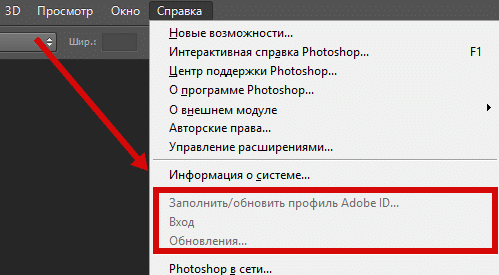

Активация Adobe Photoshop CC 2017 это не сложный процесс наш метод очень прост в этом вы можете убедится посмотрев описание. Активация нужна в первую очередь за тем чтоб использовать Фотошоп бесплатно на протяжении не ограниченного времени, так как ознакомительная версия в 30 дней это очень мало.
Если вы затрудняетесь в установке, или вам не нужна активация официальной версии, в таком случае можно скачать Adobe Photoshop CC 2017 активированную версию. Стоит отметить тот момент что крякнутые версии скачиваются с торрентов в них часто антивирусы находят вредоносный код к тому же могут быть баги в программе.
Из всех проверенных методов лечения официальной версии этот был самый эффективный и быстрый, заключается она в том что мы будем заменять .dll файл в папке с программой, такой метод широко распространен в виду простоты и отсутствии исполняемых файлов по типу exe.
Активация Adobe Photoshop CC 2017
У вас может установится как x64 версия так и x32 сразу вместе, и запускаться без проблем оба варианта. Смотрите внимательно!
Важно!! В соответствии с разрядностью системы и разрядностью установленной версии программы, у вас может не быть одного пути а второй быть, смысл один заменить файл, в папке установленной программы.
| Из архива Amtlib.dll для CC 2017 x32 | Из архива Amtlib.dll для CC 2017 x64 |
| ↓ Распаковываем в ↓ | ↓ Распаковываем в ↓ |
| C:\Program Files (x86)\Adobe\Adobe Photoshop CC 2017 | C:\Program Files\Adobe\Adobe Photoshop CC 2017 |
| Файл Amtlib.dll для CC 2017 x32 | Файл Amtlib.dll для CC 2017 x64 |
 |
 |
Данная активация гарантированно работает с официальной версией Adobe Photoshop CC 2017 скачать можно по ссылке. Другие версии в том числе взломанные не тестировались. По нашему мнению активация официальной версии это минимальные риски для пользователя, так как не используются кряк или исполняемые файлы, а так же официальные версии более стабильны и доработаны.
Можно удалить Adobe Application Manager (на ваше усмотрение), а ярлыки с Фотошопом создать на рабочем столе. Photoshop.exe найдете в папке с установленной программой.

Как узнать что активация прошла успешно?
1. Окно с просьбой активировать не всплывает при открытии Фотошоп СС 2017
2. Пункты в меню Справка как показано на скриншоте ниже будет затемнен. (не всегда)

Я думала, обманулово! Слишком уж просто. Клянусь, я обычный пользователь, которая не могла найти норм.ссылку скачки на ФШ, а тут разобралась за пару минут, спасибо вам!
Всё установилось и отлично работает!)
Проверка подлинности комментариев
Добрый день, работает ли для win10?
цитирую:
«у меня полосочка бегает и все» как это лечить? Заранее благодарю за ответ
если очень долгое время не чего не происходит и полоска не исчезает, закройте, запустите повторно через мин 15 — 30, если и это не помогло то ваш антивирус блокирует установку, можете отключить не на долго(на ваше усмотрение)
у меня полосочка бегает и все
попробуйте запустить минут через 10-15 повторно скачанный файл
спасибо за кряк :)
супер!
Хммм… удивлена.
XP и CS4 древний, слетел серийник, решила воспользоваться вашим методом, так как безопасный, — все установилось, все работает. Респект однако! Все равно большое спасибо.
Я ОРУ)
Спасибо)
Способ реально работает,качайте,не пожалеете!
Вирусов нет)))
Все супер! Огромное спасибо авторам сайта!
Раскрыть архив комментариев (вопросы-ответы)
Все получилось,заработало!!!Супер!!!!Спасибо огромное!!!!!!!!!!!!
Достойная работа спасибо администраторам данного проекта.
Всё отлично! И скачалось и установилось!
Всё супер!
Все супер! Подошло для Photoshop CC 2015 (х64) :))))
А письмо счастья от Adobe не придет после такой махинации? =)
Просто стремно как-то)
Здравствуйте!
Скажите, пожалуйста, есть ли файл amtlib.dll для Adobe Flash Pro CC?
Очень-очень нужен
Добрый день! С помощью Creative Cloud скачал и установил
Photoshop CC 2015. Photoshop CC скачивать не стал. А вот активи
ровать не получилось. При распаковке архива появилось окно
«путь и параметры извлечения». В настройках отмечено «распако
вать и заменить файлы». Выбрал путь «C:\Program Files\Adobe\
Adobe Photoshop CC 2015″. Дальше ОК. Запустил программу, активация не получилась. Попробовал удалить «старый» amtlib.dll,
программа вообще не запустилась. Восстановил на место. Подскажите, что я сделал не так?
Добрый вечер! Скачал через криэйтив клауд и распаковал файл туда. куда требовалось) Но ничего не вышло( В чем может быть причина?
Работает, спасибо.
Класс спасибо прийдётся два раза распаковывать но ничего это не вирус и всё нормально
Здравствуйте! После обновления до Windows 10 слетела активация ФШ. Хотела его активировать повторно, скачала архивы, как написано у Вас в инструкции. При распаковке архива amtlib-zip-x64 и amtlib-rar-x32 у меня выходит табличка для ввода какого-то пароля?! Что это такое и где его взять?
Спасибо.
Не знаком с win10 но это может быть если вы открываете самораспаковывающийся exe файл архиватором либо его же exe файл пытаетесь распаковать когда его нужно запускать. Точно сказать по этому вопросу не могу виндовс 10 не юзал.
Сообщите плиз:
1. Есть ли в варианте 322 Мб Adobe Camera RAW и Bridge или в каком варианте они есть?
2. Будет ли работать система обновления ФШ?
Спасибо огромное, выручили прям
Тут спрашивали, как Иллюстратор активировать. Отвечаю. Вот файлик — Скачать
Берете его и копируете с заменой
Для 64 bit: C:\Program Files\Adobe\Adobe Illustrator CC\Support Files\Contents\Windows
Для 32 bit: C:\Program Files (x86)\Adobe\Adobe Illustrator CC\Support Files\Contents\Windows
И радуетесь!)
доброе дело!!
Как же я вам благодарна! Сууупер!
Спасибо, работает на СС 2015!
А есть ли подобный amtlib.dll для программы Dreamweaver CC?
Чёт найти не могу
Cпасибо огромное,этим способом активировала последнюю версию Adobe Photoshop CC 2015 на Windows 8.1,x64 версия.
Спасибо! Все работает отлично.
спасибо, работает)
никак не получалось, кроме этого способа
А возможно как-то сохранить функцию Cloud’ности?
Попробовал с оф.сайта скачать пробную версию, и всё сработало!
Только вот Adobe Extension Manager CC не видит фотошоп, а мне-таки нужны плагины для него.
Скажите, пожалуйста, есть ли вероятность того, что купив фш на оф.сайте (там идёт по подписке 300р. в месяц), Extension Manager будет видеть фш и если я «активирую» его с помощью вашего файла, то могу спокойно отменять подписку и фш останется у меня. и Extension Manager будет его видеть?
На счет этого не в курсе извините. Может кто из посетителей в курсе?
Попробуйте обновить Extension Manager или попробуйте вернуть родной amtlib и посмотрите видимость ФШ (при первом варианте шансов нормальной работы выше).
Всё просто супер! Работает на ура! Спасибо раздающему
Respect! Сработало!
Спасибо
Спасибо, все работает!
Админ, ты просто космос не, на самом деле, красавелла;)))
Ваще четко ,спасибо!
Спасибо! Все работает отлично.
Спасибо. У меня истек пробный период, но теперь все заработало. Единственное, что прямо из архива записать файл поверх существующего не получалось. Пришлось сначала удалить старый из папки с фотошопом, а потом вставить новый.
Быстро и понятно. Спасибо, помогло!!!
Класс! качайте! без вирусов!
Скачал с официального сайта Adobe Photoshop CC 2015 и успешно все работает с этой активацией! Админ красава!
Админ красавчик)
Я скачал фотошоп взломаный,он у меня устанавливался,а потом просто вылетел и кароче не установился!!Я думаю что мои данные были украдены!потому что в таком стиле сделаны вирусы…
Одно дело думать и предполагать, а другое дело точно знать были ли украдены данные)) если бы что то было о том что вы пишите то антивирусы бы блокировали файл, или вы думаете антивирусные компании не знают не чего, а вы знаете? Судя по мышлению цитирую «Сначала установился» «вылетел и кароче не установился» вы не сильно разбираетесь в программирование да и в ПК в целом.
Уважиемый «ADMIN», вы напрасно обижаете Арсиния, ведь он написал чистую правду. Принцип работы определенного числа вирусов аналогичен. Вы говорите, что он не разбтрается в программировании, но при чем тут это? Установить взломанную программу и написать собственную — совсем разные вещи. Своими действиями по отношению к неопытному посетителю вашего сайта вы выставляете себя не с лучшей стороны, особенно когда пишете про некое программирование!
Дмитрий, мое недовольство обосновано так как каждый сомневающийся пишет что вирус не разбираясь в том как распознать его, более того есть онлайн сканеры ну хотяб на вирустотал ссылочку скинул. Не видя ПК сложно что то писать так как мы не знаем какая система у него, какой антивирус, разрядность os, программы какие установлены. Я лишь предположил по стилю написания комментария, что пользователь не сильно разбирался в проблеме, может программа не работает из за какого то другого приложения которое он ранее установил. Про программирование я написал по тому как АРСЕНИЙ якобы знает в каком стиле вирусы создают, может он залез в exe и нашел там лишние строчки кода что с трудом верится.
Спасибо
Огромное спасибо! Всё получилось. Скачал с официального сайта и с Вашей помощью активировал.
спасибо. Даже для тех, кто не разбирается-все понятно.
УРААААА!!!!!, все работает! СПАСИБООО!!!!!
Большое спасибо, работает!
круть, спасибо. до этого качала длл с других ресурсов — не срабатывало
с photoshop cc все прошло, большое вам спасибо!)))…нет ли у вас подобного совета для illustrator cc ?
А почему не получается распаковать файл? нажимаю на него, а комп все не хочет его открывать
Друзья, это победа! Спасибо!
Благодарю, все работает!
Всё работает, всем спасибо!!!
Молодцы!!! Долго бороздил просторы интернета и наконец нашел. Рахмат!
Как удалить Creative Cloud. Просто через панель управления удаление программ не получается, пишет, что использует файлы. Ну как я понимаю, то это он про фотошоп. Ну а всё таки как его удалить не удаляя пр этом фотошоп??
Я точно не помню но по моему он не удаляет фотошоп. Вы можете его просто не запускать и удалить с автозагрузки если он там есть, только потом вам нужно ярлык фотошопа вынести на рабочий стол. Для этого нужно в папку зайти где установлена программа.
Та же проблема, не могу удалить Cloud. И при установке архива пишет, что у меня нет прав на доступ к этому объекту.
добрый вечер. cs6 установить не получилось, установочная программа ошибку выдаёт. А cc установил без проблем, всё работает даже с Bridge CC проблем не возникло. До этого у меня стояла СС2014 так там возникла проблемка c Bridge. При открывании RAW файла в Camera Raw выдаёт «приложение не активировано…» ,искал в интернете, но так и не нашёл решение этой проблемы.
Вы просто супер! Мои спасители )))
ок
все получилось. спасибо большущее!!!
Все работает
хочу установить Adobe Photoshop CC активированную
И у меня все работает, спасибо большое!)
тоже попробую)
Спасибо! Все работает
Не работает, ошибка при запуске!
На XP если ставить то да, будет ошибка.
Спасибо большое! Помогло! 3 часа убил на поиски нормальной активации фотошопа!!! А-а-а-а-а… Спасибо! =)
Огромное Вам спасибо!!!
Большое спасибо, все получилось!
Пока что все четко, спасибо БОЛЬШОЕ!
Спасибо помогло. Наконец то могу использовать фотошоп не покупая его
спасибо, все работает)
Закинул файл в папку и все заработало
Спасибо, всё работает! Вирусов нет!
Всё работает, а главное архивы не содержат вирусов!
Спасибо, всё работает супер!
Спасибо большоеi!i Вы мне очень помогли! Я вам благодарен!!!
Все установилось и активировалось. Но почему куча функций в верхней и боковой панели не активны?
Какие например?
На верхней панели: вообще ни одной активной кнопки во вкладках — Фильтр, Выделение, Слои. В Редактировании активны 5 из 35. В Просмотре 3 из 25.
Попробуйте скачать оф версию или уже активированную, так как я не помню чтоб была данная проблема, может у вас лайтовая версия?
Скачана официальная. По вашей инструкции.
Сделайте скрин пришлите только без www и http посмотрим что там у вас. кстати вы опытный пользователь фотошопа или только установили ознокамливаетесь?
Скачана уже активированная версия. Все равно практически все не активно.
Вы начинали хоть что то делать, картинку редактировать и прочее? просто дело в том что не все функции и пункты меню доступны всегда, некоторые для слоев, смарт обьектов, текста и тд. Взять простое есть слой вы его скрываете и автоматом не доступны для данного слоя прозрачность заливка и многое другое, но когда вы слой делаете видимый у вас становятся доступны все то что не было доступно в том числе и пункты необходимые.
SUPER!!!
Dsa
Спасибо большое, установила PHOTOSHOP CC на windows 8 с активацией, вроде бы все получилось, надеюсь, что по истечении 30 дней работать не перестанет. Все очень доступно написано, я хоть и не продвинутый пользователь, но справилась, все скачалось без лишней рекламы, вирусов и прочего…Спасибо!!!
Благодарю за предоставленную возможность поработать с photoshop cs5 в ознакомительном порядке.
Это потому, что мне, наверное, не удалось сделать активацию. Можно ли по истечении 30 суток продлить работу с ней. Как вы справедливо заметили этот срок недостаточен для ознакомления со всеми возможностями программы.
Ваш сайт выше всех похвал.
Заранее благодарен.
Эта активация для PHOTOSHOP CC версии для cs5 выложим как сможем. Пока что попробуйте активированную версию cc.